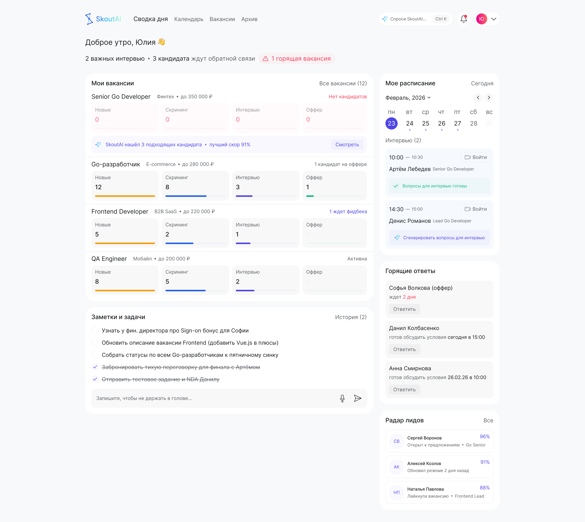
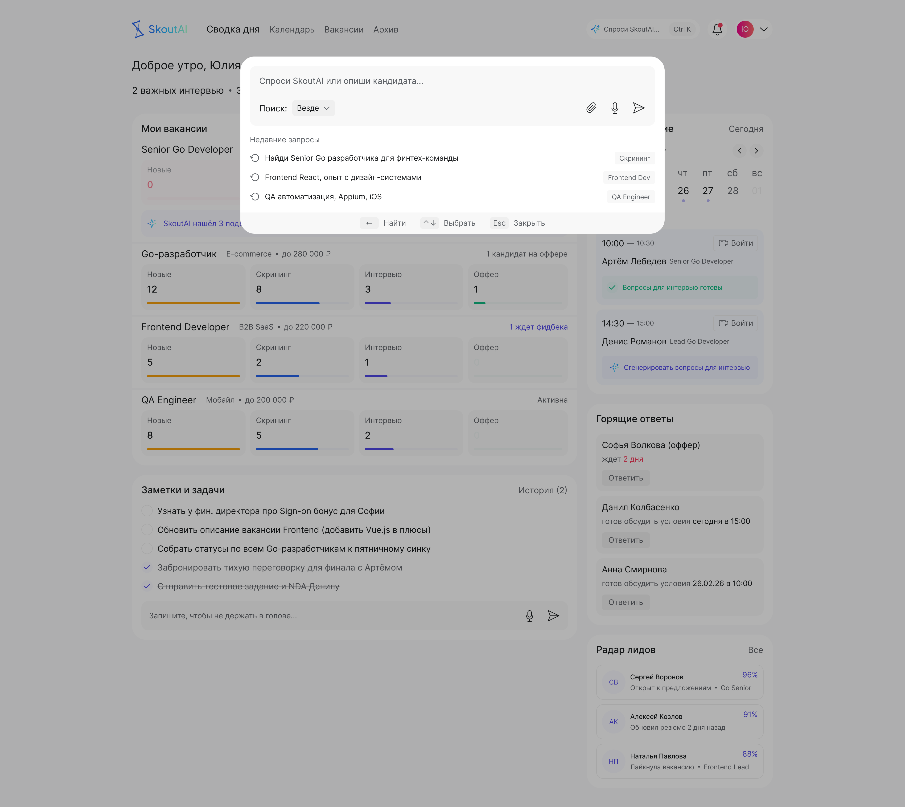
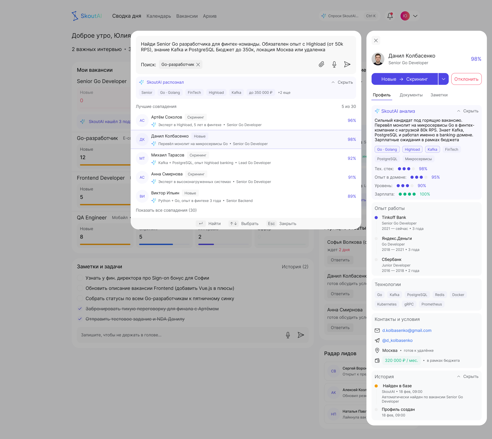
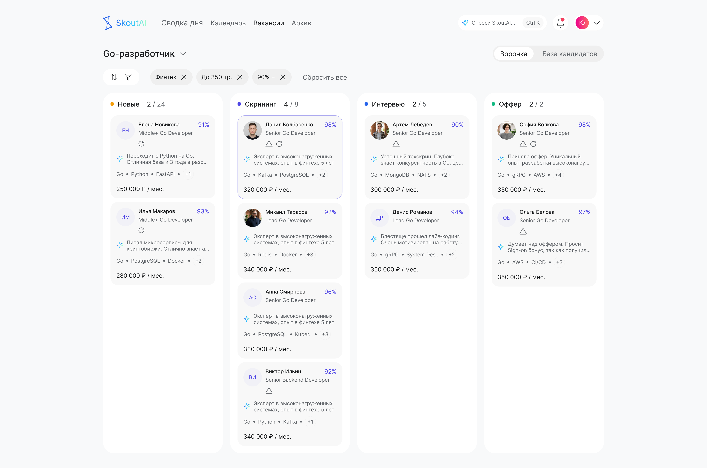

ScoutAI — AI-рекрутинг для IT
ATS-система с поиском на естественном языке, AI-скорингом кандидатов и воронкой без переключения между вкладками. Рекрутер — менеджер, не оператор базы данных.

О проекте
ScoutAI — интеллектуальная ATS-система для автоматизации подбора IT-специалистов. Проект решает три проблемы: информационная перегрузка, ручной скрининг сотен резюме, потеря кандидатов из-за медленной реакции.
Целевой пользователь: рекрутер с 5–15 активными вакансиями. Он должен работать как менеджер, а не как оператор базы данных.
Главный принцип: система сама находит, скорит и приоритизирует кандидатов. Рекрутер видит только тех, кто уже отфильтрован — и принимает решение, а не просматривает 300 резюме.
Моя роль
Делал всё сам: логотип, название продукта, формулировка проблемы, определение пользователя и его болей, конкурентный анализ (HH для работодателей, Huntflow, Talantix, LinkedIn Recruiter), логика переходов между экранами, проектирование каждого экрана, кликабельный прототип.
Исследование
Jobs-to-be-done — определение задач, которые рекрутер решает в течение дня, легло в основу структуры всех четырёх экранов ниже.
Конкурентный анализ показал главную проблему: в HH для работодателей рекрутер делает 5–7 кликов на одно решение по кандидату, и нигде не объясняется, почему резюме подходит — только список. Это и стало главным инсайтом: продукт должен не просто находить кандидатов, а объяснять, почему нашёл именно этих.
Экраны
Дашборд — полная картина дня за 5 секунд
Задача экрана: дать рекрутеру полную картину дня без погружения в детали.
- Брифинг-строка вверху (2 интервью · 3 ждут ответа · 1 горящая вакансия) — всё важное на одном уровне
- Прогресс-блоки вакансий: 4 числа (Новые-Скрининг-Интервью-Оффер) дают воронку без перехода в канбан
- AI-строка внутри горящей вакансии — система сама сигнализирует, когда нашла кандидатов
- Горящие ответы и Радар лидов — очередь действий, а не уведомления
Почему так: рекрутер не должен помнить, где что искать. Дашборд сам расставляет приоритеты.

Поиск — быстрый старт без когнитивной нагрузки
Задача экрана: дать рекрутеру быстрый старт поиска без когнитивной нагрузки.
- Модал поверх дашборда с затемнением — контекст не теряется, можно вернуться
- Scope-переключатель «Поиск: Везде» / «Поиск: Go-разработчик» — поиск сразу привязывается к вакансии
- Недавние запросы — снижают трение повторного поиска
- Подсказки в футере (Найти / Выбрать / Esc) — клавиатурная навигация
Почему так: рекрутер часто повторяет похожие запросы. Scope решает проблему «в какую вакансию добавить кандидата из поиска» — самая сложная логическая задача проекта, потребовавшая 3 итерации.

Результат поиска — лучшие кандидаты и два пути
Задача экрана: показать лучших кандидатов и дать два пути дальнейшей работы.
- AI-теги разбора запроса с крестиками — рекрутер видит, как система поняла запрос
- Скор рядом с именем — решение принимается за секунду
- AI-саммари в 1–2 строки — не нужно открывать профиль
- Профиль открывается справа (slideover) — не теряешь список при изучении деталей
- «Смотреть всех в воронке» — переход к системной работе с полным набором результатов
Почему так: два пути — быстрое решение по одному кандидату или системная работа с группой через воронку. Профиль открывается поверх списка (slideover), а не на отдельной странице: переход разрывает контекст — рекрутер держит в голове список кандидатов, к которому иначе пришлось бы возвращаться. Тот же паттерн у Linear и Notion для детальных просмотров без потери контекста.

Воронка — полный контроль над процессом
Задача экрана: дать рекрутеру полный контроль над процессом отбора для конкретной вакансии.
- 4 колонки = 4 этапа воронки — визуально виден прогресс по каждому кандидату
- AI-фильтры предзаполнены из поиска — не нужно настраивать заново
- Счётчик в заголовке колонки (Скрининг 4/8) — сразу видно, сколько кандидатов на каждом этапе
- Карточка: скор + AI-саммари + стек + зарплата — вся нужная информация без открытия профиля
Почему так: воронка — основное рабочее пространство рекрутера. Всё, что нужно для решения — в самой карточке.

Визуальный стиль — чтобы глаз не уставал
Ориентир — инструменты, в которых люди сидят часами каждый день: Notion, Linear. Рекрутер будет открывать это приложение ежедневно, поэтому визуал должен не мешать. Иерархия — через типографику, никаких тяжёлых заливок.
- Никаких границ между блоками — только воздух. Линии убраны полностью, потому что они бьют по визуалу.
- Фиолетовый акцент — только там, где нужно принять решение: на AI-элементах и кнопках действий, не для декора.
Результат
- 4 экрана task flow
- 4 AI-фичи
- 4 закрытых JTBD-сценария
- 1 кликабельный прототип
- Дизайн-система с токенами и UI-kit
Продукт от нуля: логотип, JTBD, боли, конкурентный анализ, task flow, 4 экрана, прототип. Скрининг занимает минуты вместо часов — рекрутер принимает решения, а не просматривает резюме.
Что бы сделал иначе: провёл бы 3–5 интервью с реальными рекрутерами до начала проектирования. Часть решений основана на предположениях, которые стоило проверить раньше.